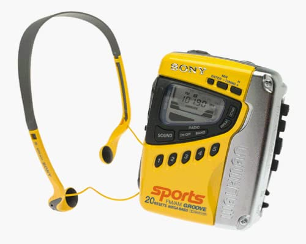

Listening To Old Playlists
By Riley Wagner, 10-05-20I would like to imagine that a lot of people tend to think back on old times and remember the music they used to listen to at the time. I must confess that I do this quite often when I grow tired of listening to new tracks all the time, so I pop open the metaphotical CD rack and click one into my Walkman.
That feeling when you press the play button on a song that you haven't heard for a decade is surreal, to say the least. All of the sudden your head rushes with memories, feelings, thoughts from when you listened to that song so long ago. It's the closest we can get to time travel without inventing a time machine. Hearing a song again after ages is akin to hearing it for the first time again. This wave of nostalgia seems to work best on music that I haven't listened to since some time beyond the scope of my memory. This wave of nostalgia can, however, bring with it a nasty thing. People who get clouded by nostalgia can sometimes get lost in it and end up denouncing all other music. A common phrase used is "they don't make music like they used to." In other words, these are people who have very strong opinions on older music. Old music is sometimes regarded as perfect in every possible way, which is certainly one opinion to have.
The issue with comparing songs of the past to recent hits is that you don't have that same feeling of nostalgia that inflates your enjoyment of a song that came out within the past year. I hate to make this argument because I feel like one of those kinds of people that are always saying "oh, they don't make music like they used to." They do, but music changes significantly over time. New sounds and new genres bask in the limelight, and older songs are left in the wake of musical innovation. There will likely be a point in the future when somebody will pop open their music list and play Billie Eilish for "old times' sake."
On the same topic, there is an interesting phenomenon that accelerates the process of aging music: death. This is a bit of a grave observation to make, but I find it to be true nonetheless. There are many examples, but one of the most popular instances of this is with Michael Jackson. There was a resurgence in media when he passed away. A few other notable examples are artists Juice WRLD and XXXTentacion. Both were rising in popularity due to their music, but in death, they became legends in their field. I would daresay that they were put on pedestals up there with Tupac.
Generally, talk about music is nice when it is about your light opinion on a track or remembering an old banger from a long time ago. When you become an critic because you listen to one artist for a year straight, the conversation turns a bit sour. If I wanted a professional opinion on music, I would go read the opinion of someone who gets paid to make those opinions.